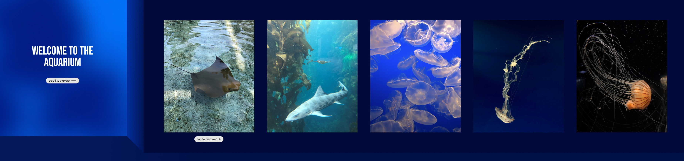

For the visual design of my final project, I am planning to revise the transition between the first and second pages. The first page will have layers that zoom in one by one, giving the effect that you are going into the background. This will then fade out into the second page. I will also add space at the right edge of the photo gallery, giving the design more room to breathe. Additionally, I will edit out the initial hovering that returns to a smaller scale when the overlay of information is open. The shrinking and expanding of the photos do not fit well with the design.
As for UX/UI aspect, scrolling horizontally is not intuitive for users, and the current label can easily be mistaken as a button. Therefore, will add a label and an icon that indicates to the user to scroll horizontally to the right. Later in the photos, there will be text that tells the user to click the photos to learn more. I will also add movement along with the arrow keys to allow the user to move through the photos more easily instead of having to manually scroll through.